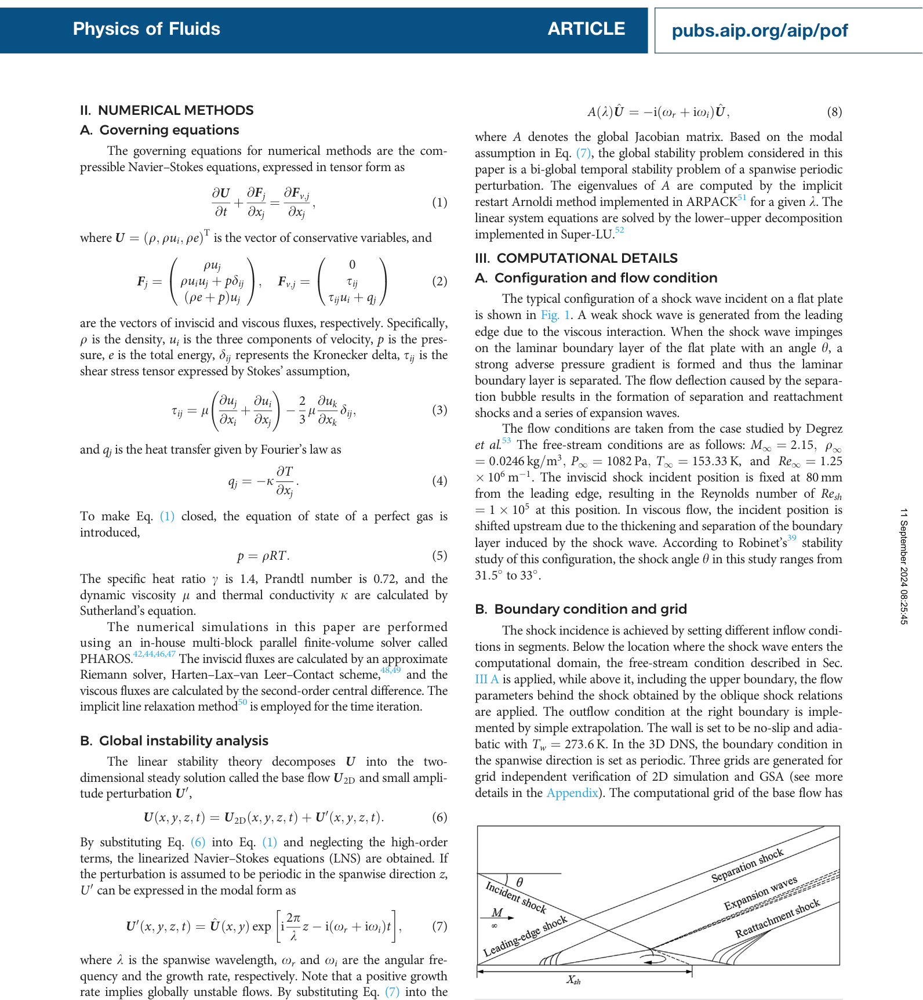
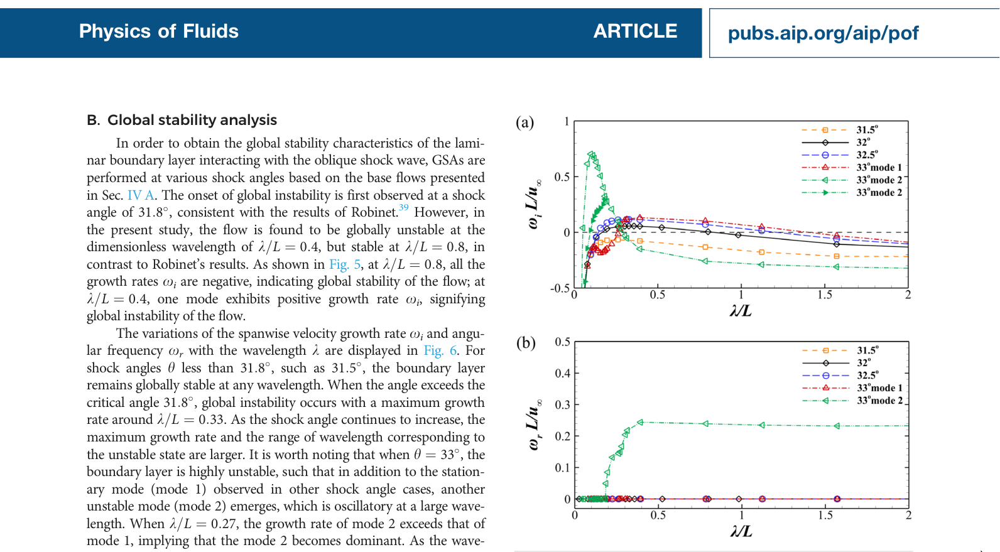
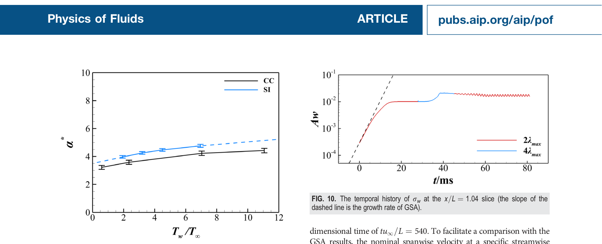
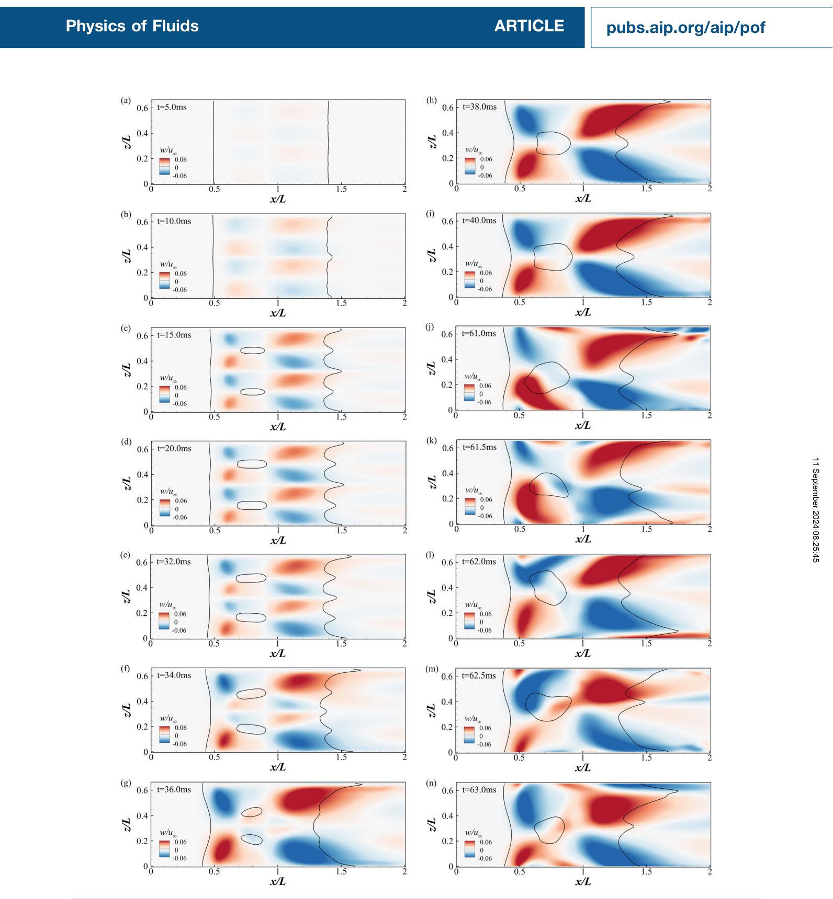

01中文摘要
研究马赫2.15、雷诺数1×10⁵下斜激波/层流边界层干扰，联合全局稳定性分析与直接数值模拟。全局稳定性表明，当激波角超过临界角31.8°时出现定常全局不稳定；激波角33°时出现附加振荡模态，长波长下振荡、随波长减小逐渐占优，并最终与共轭模态演化为两个增长率不同的定常模态。基于三层理论建立仅依赖自由来流条件和激波角的全局不稳定判据。对32°工况的DNS发现非线性增长中出现二维基流没有的二次分离，分离流经历二次扰动增长，主导展向波长加倍，最终围绕准定常状态振荡。
原始摘要（英文/原文）
This study investigates the oblique shock-wave/boundary-layer interaction with a Mach number of 2.15 and a Reynolds number of 1 105. Both global stability analysis and direct numerical simulation are used to reveal the global instability characteristics and three-dimensional details of the incident shock flow. The results of global stability analysis indicate that stationary global instability occurs when the shock angle exceeds the critical angle 31:8. At a shock angle equal to 33, an additional unstable mode appears, which is oscillatory at large wavelength and gradually dominant when the wavelength decreases. As the wavelength is further reduced, the mode and its conjugation evolve into two stationary modes with different growth rates. A global instability criterion for incident shock flow is established based on the triple deck theory, which determines the instability only through free-stream conditions and shock angles. A direct numerical simulation is performed for the 32 shock angle case. It is found that secondary separation occurs during the nonlinear growth, which is absent in the two-dimensional base flow. Moreover, the separated flow undergoes a secondary perturbation growth, during which the dominant spanwise wavelength is doubled and the flow structures change significantly. The flow oscillates around a quasi-steady state in the end, indicating that a stationary unstable mode can develop unsteadiness without external disturbances.
02阅读说明
15 页 Physics of Fluids 35, 084121 (2023)，数值研究（双全局稳定性分析 GSA + 三维 DNS），并以三重层理论建立判据。bundle 含完整正文、Table I/II 与图注，参考文献完整。图件清单存在图号与文件名错位（如图 12 对应 fig11_p10.png、图 15 对应 fig14_p12.png、图 18 对应 fig16_p14.png），figures 字段按清单原样引用；图 8 的“原图注”在清单中被正文段落替代，故未选该图。式 (9) 在文本层严重乱码，已用 PDF 第 7 页核对；图 9、图 17 的定量刻度未标数值，只能引趋势。信息完整度较高。 文章类型：期刊
03一句话核心与三句话摘要
斜激波/层流边界层干扰在激波角超过 31.8° 时全局不稳定，定常模态可经二次分离自发转为非定常。
- 缺口：入射斜激波构型缺少像压缩拐角那样仅由来流条件决定的全局稳定性判据，且“定常全局模态能否在无外扰时自发产生非定常”尚无答案。 AI概括
- 方法：对 M∞=2.15、Re_L=1×10^5、激波角 31.5°–33° 的平板/斜激波干扰做展向周期双全局稳定性分析（ARPACK），并对 32° 工况做 600×300×80 网格、Δt=40 ns、总时长 81 ms 的三维 DNS。 AI概括
- 结论：临界激波角 31.8°，不稳定增长率在 λ/L≈0.33 最大；33° 时出现第二模态并在 λ/L=0.18 分岔为两个定常模态；DNS 显示二次分离、扰动波长加倍与二次增长，最终围绕准定常态以 St≈0.06 振荡。 原文明确
04核心内容清单
| 要点 | 类型 | 重要性 | 原文依据 | 属性 |
|---|---|---|---|---|
| 研究对象为 M∞=2.15、Re_L=1×10^5 的平板/入射斜激波层流干扰，激波角取 31.5°、32°、32.5°、33°。 | 研究定位 | A | p2 摘要；p4 §III A；图 1（p4） | 原文明确 |
| 方法为双全局时间稳定性分析（展向周期、模态假设、ARPACK 特征值）+ 三维 DNS，同一 PHAROS 求解器。 | 数值方法 | A | p4 §II；式 (6)–(8) | 原文明确 |
| 二维基流：θ=32° 时分离点 x/L=0.5、再附点 x/L=1.4；分离区随激波角增大而扩大。 | 基流结果 | A | p5 §IV A；图 2、图 3（p5） | 原文明确 |
| θ=33° 时摩阻分布再次穿过 Cf=0，出现二次分离，主分离泡分裂为两个。 | 基流结果 | A | p5；图 3、图 4（p5） | 原文明确 |
| 全局不稳定起始于激波角 31.8°；λ/L=0.4 不稳定而 λ/L=0.8 稳定（与 Robinet 相反）。 | GSA 结果 | A | p6 §IV B；图 5（p6） | 原文明确 |
| 最大增长率出现在 λ/L≈0.33，且随激波角增大最大增长率与不稳定波长范围均增大。 | GSA 结果 | A | p6；图 6（p6） | 原文明确 |
| θ=33° 出现振荡型 mode 2，λ/L=0.27 时超过 mode 1 占优，λ/L=0.18 时频率降为零并分岔为两个定常模态。 | GSA 结果 | A | p6；图 6、图 7（p6） | 原文明确 |
| 基于三重层建立入射激波全局不稳定判据：3.5<α*<5.5；临界 α* 随壁温升高而增大，且大于同条件压缩拐角的 3.44–4.59。 | 判据 | A | p7–8 §IV C；式 (9)；表 I；图 9（p8） | 原文明确 |
| DNS 线性增长率 6.3×10^-4 与 GSA 的 6.7×10^-4 接近，验证模态叠加初场的有效性。 | 验证 | A | p8 §IV D；图 10（p8） | 原文明确 |
| DNS 非线性阶段出现二维基流中没有的二次分离；二次增长时扰动波长加倍、两个二次分离泡合并，最终围绕准定常态振荡。 | DNS 结果 | A | p9–10 §IV D；图 12（p10）、图 14（p11） | 原文明确 |
| 压力脉动基频 St≈0.06（约 420 Hz），含 800、1200 Hz 谐波；下游高频谐波变为宽频。 | 频谱结果 | A | p12；图 17（p13） | 原文明确 |
| 作者明确将二次增长的机制留待后续研究，判据也需更多数据验证。 | 局限 | B | p12–13 结论末段 | 原文明确 |
05引言：研究问题与领域缺口
【原文明确】作者从层流转捩的 receptivity–线性/瞬态增长–非线性破碎框架切入，指出激波/边界层干扰（SWBLI）通过分离泡与波系显著改变稳定性，是转捩与低频振荡的重要来源。综述了实验（Liepmann、Ackeret、Gadd、Hakkinen、Giepman、Chang 等）与数值（Katzer 的压力标度验证、Sandham 的 Mack 第二模态、Fu 的无扰动转捩）工作，并梳理线性稳定性理论（LST）与抛物化稳定性方程（PSE）因平行流/缓变假设只能处理对流不稳定的局限。随后重点评述全局稳定性分析（GSA）：Robinet (2007) 首次对入射激波干扰做双全局分析，发现激波角超过临界值后全局不稳定并经 DNS 证实；Hildebrand et al. (2018) 在 M=5.92 得到类似结果并用伴随模态分析机制；Sidharth et al. (2018) 给出双楔临界偏转角；Hao et al. (2021, 2022) 对 M=7.7 压缩拐角与双楔/双锥建立基于三重层的判据；Cao et al. (2022, 2023) 用 DNS 把转捩归因于流向对转涡与条带的失稳。作者据此提出三个目标：(1) 用 GSA 确定入射激波的临界激波角及各角度下不稳定模态的演化；(2) 仿照压缩拐角，建立仅依赖来流条件与激波角的全局不稳定判据；(3) 用 DNS 回答定常模态能否发展出非定常。
06流动条件与几何构型
| 项目 | 数值/描述 | 依据 | 备注 |
|---|---|---|---|
| 来流马赫数 M∞ | 2.15 | p2 摘要；p4 §III A | 全部 GSA/基流工况共用 |
| 单位雷诺数 Re∞ | 1.25×10^6 m^-1 | p4 §III A | 参考长度为 1 m |
| 基于入射位置的雷诺数 Re_L | 1×10^5（L=80 mm） | p4 §III A | 激波无粘入射位置距前缘 80 mm；粘性流中入射位置因边界层增厚/分离而上移 |
| 来流密度 | 0.0246 kg/m³ | p4 §III A | 取自 Degrez et al. (1987) 的实验条件 |
| 来流静压 | 1082 Pa | p4 §III A | 同上 |
| 来流静温 | 153.33 K | p4 §III A | 同上 |
| 壁面条件 | 无滑移；绝热；Tw=273.6 K | p4 §III B | 原文同时写 adiabatic 与给定 Tw，二者关系文中未解释 |
| 展向边界 | 三维 DNS 周期 | p4 §III B | GSA 亦假设展向周期扰动 |
| 工况 1（基流/GSA） | θ=31.5° | p5 §IV A；图 6（p6） | 低于临界角，任意波长全局稳定 |
| 工况 2（基流/GSA） | θ=31.8° | p6 §IV B；图 5（p6） | 全局不稳定起始角；λ/L=0.4 不稳定、0.8 稳定 |
| 工况 3（基流/GSA/DNS） | θ=32° | p5–10；图 2、图 3（p5）、图 12（p10） | 分离 x/L=0.5、再附 x/L=1.4；DNS 工况；网格无关性验证亦用此角 |
| 工况 4（基流/GSA） | θ=32.5° | p5 §IV A；图 4（p5）、图 6 | 分离区进一步扩大 |
| 工况 5（基流/GSA） | θ=33° | p5–6；图 3、图 4（p5）、图 7（p6）、图 8（p7） | 二次分离、分离泡分裂、mode 2 出现 |
| 判据文献工况 A | M∞=7，Re_L=1.28×10^6，Tw/T∞=3.2，θ=11.7°，α=10.08°，α*=4.26（Chang et al. 2022） | p8 表 I | 用于建立 α* 边界，非本文计算 |
| 判据文献工况 B | M∞=6，Re_L=2.7×10^6，Tw/T∞=4.5，θ=12.6°，α=8.72°，α*=4.47（Fu et al. 2021） | p8 表 I | 同上 |
| 判据文献工况 C | M∞=5.92，Re_L=1.15×10^5，Tw/T∞=6.95，θ=13.7°，α=11.29°，α*=4.76（Hildebrand et al. 2018） | p8 表 I | 同上 |
| 判据本文工况 | M∞=2.15，Re_L=1×10^5，Tw/T∞=1.93，θ=31.8°，α=9.93°，α*=3.97 | p8 表 I | 临界状态对应值 |
| DNS 初场 | 二维基流 + A×GSA 最不稳定模态（λ/L=0.33），A=0.28，最大 spanwise 速度为 1% u∞ | p8 式 (10)、(11) | 展向域为 2 倍最不稳定波长 |
| DNS 网格与时间步 | 600×300×80；Δt=40 ns（用 20 ns 验证）；物理时长 81 ms（tu∞/L=540） | p8 §IV D | 二阶隐式时间推进 |
| 四倍波长验证工况 | 展向域取 4 倍最不稳定波长，以 2 倍波长域 t=28 ms 饱和场复制为初场 | p9；图 13（p11） | 用于确认次谐波主导 |
| 采样设置 | 9 个探针；采样间隔等于时间步 40 ns；记录 20 ms 以上、共 530000 组 | p12 | 采样 St=3750 |
| 几何与维度 | 二维平板 + 入射斜激波；三维 DNS 展向周期 | p4；图 1（p4） | 激波由分段入流条件实现 |
| 边界层状态 | 层流 | p2 摘要；全文 | 无转捩模型 |
| 来流湍流度/噪声 | 文中未提及 | 全文 | DNS 为确定性扰动，无风洞噪声参数 |
07核心现象与关键参数
| 参数 | 定义 | 数值 | 关系/说明 | 依据 |
|---|---|---|---|---|
| θ | 入射斜激波相对来流的激波角 | 31.5°、31.8°（临界）、32°、32.5°、33° | θ 增大 → 分离区扩大 → 更不稳定 | p4–6；图 6 |
| θc | 全局不稳定临界激波角 | 31.8° | θ>θc 时出现正增长率模态 | p2 摘要；p6 §IV B |
| λ/L | 展向扰动波长与特征长度（入射位置 80 mm）之比 | 不稳定范围约 0.2–0.5；最大增长率在 0.33；mode 2 占优于 0.27；分岔于 0.18 | λ/L 减小 → mode 2 频率下降直至为零 | p6；图 5、图 6 |
| ωi | 无量纲增长率（正值为全局不稳定） | GSA 在 θ=32°、λ/L=0.33 时约 6.7×10^-4；DNS 测得 6.3×10^-4 | DNS 与 GSA 接近，验证线性段 | p8；图 10（p8） |
| ωr | 无量纲角频率 | mode 2 在大波长非零，λ/L=0.18 时降为零 | 频率为零即模态由振荡转为定常 | p6；图 6b、图 7 |
| α* | 三重层缩放斜坡角，量化激波/边界层干扰强度 | 入射激波不稳定边界 3.5<α*<5.5；压缩拐角 3.44<α*<4.59 | α*=αRe_L^{1/4}/[C^{1/4}0.332^{1/2}(M∞²−1)^{1/4}]，C=μwT∞/(μ∞Tw) | p7 式 (9)；表 I；图 9 |
| C | Chapman–Rubesin 参数 | C=μwT∞/(μ∞Tw)（表 I 未直接列 C，仅列 Tw/T∞） | 进入 α* 的粘性–温度修正 | p7 式 (9) |
| Tw/T∞ | 壁面与自由来流温度比 | 本文 1.93；文献工况 3.2、4.5、6.95 | 该比值（而非 Tw/T0）控制临界 α* | p8 表 I |
| St | 基于 L 与 u∞ 的 Strouhal 数 | 压力脉动基频 St≈0.06（f≈420 Hz）；采样 St=3750 | 各探针基频相同，谐波 800/1200 Hz | p12；图 17（p13） |
| Cf | 壁面摩阻系数 | θ=33° 时分布再次穿过 Cf=0（二次分离）；具体数值未列表 | Cf=0 用于定位分离/再附 | p4–5；图 3 |
| δw | 归一化展向速度均方根，用于追踪扰动增长 | 在 x/L=1.04 截面随时间变化（图 10） | 斜率对应 GSA 增长率 | p8 式 (12) |
| A | DNS 初场中 GSA 模态的放大因子 | 0.28 | 使最大展向速度达 1% u∞ | p8 式 (10)、(11) |
| L | 特征长度，取无粘激波入射位置距前缘的距离 | 80 mm | 用于无量纲化 x、λ、时间 | p4 §III A；图 2 |
| 网格雷诺数 | 首层网格尺度对应的雷诺数 | 约 1（粗/中网格 1.25，细网格 0.6） | 首层高度 1×10^-6 m | p5；附录表 II |
08方法与数据
【原文明确】控制方程为可压缩 Navier–Stokes 方程 (1)–(5)，完全气体，γ=1.4，Pr=0.72，粘性与导热由 Sutherland 公式给出；求解器为自研多块并行有限体积程序 PHAROS，无粘通量用 HLLC 近似 Riemann 求解器，粘性通量二阶中心差分，时间推进用隐式线松弛。全局稳定性分析把流场分解为二维定常基流 U2D 与小扰动 U'（式 6），线性化得 LNS；假设扰动在展向周期，取模态形式 (7)，化为特征值问题 (8)，用 ARPACK 隐式重启 Arnoldi 法求特征值、SuperLU 解线性系统，属双全局时间稳定性。计算域按分段入流实现斜激波入射：激波进入点以下给自由来流，以上及上边界给斜激波关系得到的波后参数；右边界外推，壁面无滑移且绝热、Tw=273.6 K，三维 DNS 展向周期。基流网格 600×300（流向×法向），分离区局部加密，法向首层高度 1×10^-6 m，网格雷诺量级为 1，并对不同激波角调整法向网格使激波恰好打在 x=80 mm。附录用粗/中/细三套网格（400/600/800、200/300/400，网格雷诺数 1.25/1.25/0.6）比较摩阻与特征值谱，确认中等网格已网格无关。三维 DNS 网格 600×300×80，时间推进改为二阶隐式，Δt=40 ns（用 20 ns 验证），物理时长 81 ms。
| 项目 | 内容 | 依据 | 备注 |
|---|---|---|---|
| 控制方程 | 可压缩 Navier–Stokes 方程 (1)–(5)，完全气体，γ=1.4，Pr=0.72，Sutherland 粘性/导热 | p4 §II A | 有限体积离散形式 |
| 求解器 | 自研多块并行有限体积程序 PHAROS | p4 §II A | GSA 与 DNS 共用 |
| 空间格式 | 无粘通量 HLLC 近似 Riemann 求解器；粘性通量二阶中心差分 | p4 §II A | 时间推进隐式线松弛；DNS 改二阶隐式 |
| 稳定性分析框架 | 双全局时间稳定性：U=U2D+U'，线性化得 LNS，展向周期模态假设 (7)，特征值问题 (8) | p4 §II B | 只能捕捉全局模态，不含瞬态增长 |
| 特征值求解 | ARPACK 隐式重启 Arnoldi；线性系统 SuperLU 分解 | p4 §II B | 给定 λ 求特征值 |
| 基流网格 | 600×300（流向×法向）；首层 1×10^-6 m；分离区加密；按激波角调整法向网格使入射点固定在 x=80 mm | p4 §III B | 网格雷诺量级 1 |
| 网格无关性 | 粗/中/细 400×200、600×300、800×400（边界层内 150/200/250）；比较 θ=32° 的 Cf 与 λ/L=0.33 特征值谱 | p14 附录；表 II；图 18、图 19 | 中等与细网格接近，选中等网格 |
| 边界条件 | 分段入流（激波下方自由来流、上方波后参数）；上边界波后参数；右边界外推；壁面无滑移绝热 Tw=273.6 K；展向周期 | p4 §III B | 斜激波由入流条件而非激波拟合实现 |
| DNS 设置 | 600×300×80；Δt=40 ns；81 ms；展向 2 倍最不稳定波长；初场为基流+模态（A=0.28） | p8 §IV D | 另用 4 倍波长域复算 |
| 时间步验证 | 用 20 ns 与 40 ns 结果比较，分辨率已验证 | p8 §IV D | 文中未给比较细节 |
| 判据构建方法 | 激波角 θ 经斜激波关系换算为同等压升的压缩拐角角 α，再用式 (9) 得 α*，对表 I 工况做 GSA 找不稳定边界 | p7 §IV C | 与 Hao et al. (2021) 压缩拐角判据对比 |
| 频谱分析 | 9 探针压力记录，FFT 后按 p1、L/u∞ 无量纲化（式 13） | p12 | 记录 530000 组、20 ms 以上 |
| 实验验证 | 无；来流条件取自 Degrez et al. (1987) 实验 | p4 §III A | 本文未与实验数据对比 |
09核心推导与公式
两条推导链：其一，把 Navier–Stokes 分解为二维定常基流与小扰动，线性化后利用展向周期性把三维扰动化为二维特征值问题，从而用 ARPACK 求全局模态；其二，用三重层理论把压缩拐角的缩放角 α* 推广到入射激波，通过斜激波关系把激波角换算为等效斜坡角，从而仅用来流条件与激波角判定全局稳定性。
关键假设
- 基流为二维定常解，扰动为小量，可线性化（LNS）
- 扰动在展向周期，可用单一波长 λ 的模态表示
- 时间模态为 exp(−iωt)，ω=ωr+iωi，ωi>0 即全局不稳定
- 三重层理论适用：上/中/下三层分别为无粘无旋、无粘有旋、粘性层
- 入射激波与同等压升的压缩拐角在 α* 意义下等价
- 各文献工况的 α* 可比，尽管 M∞、Re_L、Tw/T∞ 不同
推导过程
把瞬时流场写成二维定常基流与小振幅扰动之和，作为线性稳定性分析的起点。
将分解代入可压缩 N–S 方程并略去扰动的高阶项，得到线性化 N–S 方程（LNS）；文中未逐项写出 LNS。
设扰动在展向按单一波长周期变化、在时间上按复频率指数变化，把三维扰动降为 (x,y) 平面的模态形状函数。
将模态形式代入 LNS，得到以全局 Jacobian 矩阵 A 表示的特征值问题；给定波长 λ 求特征值，正实部增长率对应全局不稳定。
三重层理论给出量化干扰强度的缩放斜坡角 α*：实际斜坡角 α、拐角处 Re_L、来流马赫数 M∞ 与 Chapman–Rubesin 参数 C 的组合；C 含壁面/来流粘性与温度比。
对给定激波角 θ，用斜激波关系求出波后压升，再求产生相同压升的压缩拐角角 α，从而把入射激波问题映射到三重层判据的坐标中。
对表 I 的若干来流条件（不同 M∞、Re_L、Tw/T∞）重复 GSA，找出临界 α*，得到入射激波 3.5<α*<5.5 与压缩拐角 3.44<α*<4.59 的不稳定区间。
把 GSA 最不稳定模态按放大因子叠加到基流上作为 DNS 初场，并用展向速度均方根的时间斜率与 GSA 增长率对比，验证线性段。
对探针压力时间序列做 FFT，并以 p1、L/u∞ 无量纲化，得到 Strouhal 数谱；基频 St≈0.06 对应 420 Hz。
适用边界：文中没有推导式 (9)，只说明它来自三重层理论并引用 Stewartson & Williams (1963) 与 Hao et al. (2021)；LNS 也未逐项写出。判据建立在“入射激波可用同等压升的压缩拐角等效”这一映射上，其误差未评估；参与拟合的工况仅 4 个（3 个文献 + 本文），且 M∞ 从 2.15 跨到 7、Tw/T∞ 从 1.93 到 6.95，外推能力有限。GSA 为双全局、展向周期假设，无法捕捉非周期/瞬态增长；DNS 只算 θ=32° 一个工况，二次增长机制未给出定量推导。
10结果：主要发现与关键证据
【原文明确】基流（Sec. IV A）：对 θ=31.5°、32°、32.5°、33° 做二维计算；以入射位置 L=80 mm 为特征长度，θ=32° 时分离点与再附点分别位于 x/L=0.5 与 1.4，分离泡很薄（图 2）；摩阻随激波角增大而分离区扩大（图 3），θ=33° 时 Cf 分布再次穿过 Cf=0，表明出现二次分离；图 4 显示涡核始终位于分离泡后部，随角度增大变形，33° 时分裂为两部分。GSA（Sec. IV B）：全局不稳定起始于 θ=31.8°，与 Robinet 一致；但本文在 λ/L=0.4 不稳定、λ/L=0.8 稳定，与 Robinet 结果相反（图 5）。θ<31.8°（如 31.5°）在任意波长都稳定；超过临界角后在 λ/L≈0.33 取得最大增长率，角度越大最大增长率与不稳定波长范围越大（图 6）。θ=33° 时除定常模态（mode 1）外出现第二不稳定模态（mode 2），在大波长处振荡；λ/L=0.27 时 mode 2 增长率超过 mode 1 而占优；波长减小到 λ/L=0.18 时 mode 2 频率降为零，与其共轭模态碰撞后分岔为两个增长率不同的定常模态（图 6b、图 7）。spanwise 速度扰动集中在分离区、最大值位于分离区后部（图 8）；33° 时 mode 1 的 spanwise 速度出现“絮状扩散”，作者推测与分离泡分裂有关。判据（Sec. IV C）：用三重层缩放斜坡角 α*（式 9）量化干扰强度，把激波角 θ 通过斜激波关系换算为同等压升的压缩拐角角 α，再对表 I 的来流条件逐一做 GSA 找边界；入射激波的不稳定边界为 3.5<α*<5.5，压缩拐角为 3.44<α*<4.59；临界 α* 随壁温升高而增大，且同条件下入射激波临界值大于压缩拐角，说明入射激波流动更稳定（图 9、表 I）。DNS（Sec. IV D）：对 θ=32°（GSA 只有定常不稳定模态、增长率较小）叠加最不稳定模态（λ/L=0.33）为初场，A=0.28，使最大 spanwise 速度达来流 1%（式 10、11），展向域取 2 倍波长；DNS 线性增长率 6.3×10^-4，GSA 为 6.7×10^-4（图 10）。t=17 ms spanwise 速度饱和，t=32 ms 出现二次增长，t=47 ms 开始振荡；线性段分离线仍直、再附线轻微扭曲，非线性段（5–17 ms）分离线上移、再附线波状扭曲并出现两个新的椭圆二次分离泡，饱和段（17–32 ms）结构变化很小，二次增长段（32–39 ms）扰动波向中间挤压、两对波合并为一对、两个二次分离泡倾斜迁移并合并为大分离泡，分离线中部下移、两侧上移呈弓形，再附线由均匀波状变为双峰山形；39–60 ms 转为非定常，60–81 ms 围绕参考值振荡（图 12）。把展向域扩到 4 倍波长（以 28 ms 饱和场为初场复制）得到相同结果，证明二次增长由二倍波长的次谐波主导（图 13）。准定常阶段（60–81 ms 时间平均）的三维摩阻与二维基流比较：三维平均分离点明显上移、再附点几乎不变，二次分离泡在展向平均摩阻中不体现（图 15）。流场拓扑（图 14）：一次增长后再附线上出现结点（N）与鞍点（Sa），部分流线终止于二次分离线附近的螺旋点（Sp），再附线上的结点/鞍点数是分离线上的两倍，对应扰动充分发展后条带加倍；下游形成两对（二次增长后变为一对）对转涡，流向涡量集中在边界层内。压力脉动 PSD（图 17）：九个探针给出共同基频 St≈0.06（f≈420 Hz）及 800 Hz、1200 Hz 等谐波，下游高频谐波消失、变为宽频，作者认为高频可能与条带相互作用并触发转捩。
| 发现 | 证据 | 证据类型 | 强度 | 位置 | 属性 |
|---|---|---|---|---|---|
| 全局不稳定在激波角 31.8° 起始；同一角度下 λ/L=0.4 不稳定、λ/L=0.8 稳定，与 Robinet (2007) 的结果相反。 | 特征值谱：λ/L=0.8 时所有增长率均为负，λ/L=0.4 时出现正增长率模态 | GSA 定量结果 | 强 | p6；图 5（p6） | 原文明确 |
| 最大增长率位于 λ/L≈0.33；激波角越大，最大增长率越高、不稳定波长范围越宽。 | 增长率–波长曲线随 θ=31.5°–33° 的系统变化 | 参数扫描 | 强 | p6；图 6（p6） | 原文明确 |
| θ=33° 时出现振荡型 mode 2，在 λ/L=0.27 超过 mode 1，λ/L=0.18 时频率归零并分岔为两个定常模态。 | 增长率/频率曲线与模态演化轨迹；两分支在短波长处分离 | GSA 定量结果 | 强 | p6；图 6、图 7（p6） | 原文明确 |
| 基于三重层的判据给出入射激波不稳定边界 3.5<α*<5.5，临界 α* 随壁温升高而增大，且大于同条件压缩拐角。 | 四个来流工况的临界 α*（3.97、4.26、4.47、4.76）及与压缩拐角区间的比较 | 判据/标度 | 中 | p7–8 §IV C；式 (9)；表 I；图 9（p8） | 原文明确 |
| DNS 线性增长率（6.3×10^-4）与 GSA（6.7×10^-4）接近，模态叠加初场有效。 | x/L=1.04 截面 δw 的时间斜率与 GSA 预测虚线对比 | 验证 | 强 | p8；图 10（p8） | 原文明确 |
| 非线性增长阶段出现二维基流中没有的二次分离；二次增长使扰动波长加倍、两个二次分离泡合并，最终流场围绕准定常态振荡。 | 不同时刻展向速度云图与分离/再附线演化；四倍波长域复算结果相同 | DNS 结果 | 强 | p9；图 12（p10）、图 13（p11）、图 14（p11） | 原文明确 |
| 准定常阶段压力脉动基频 St≈0.06（约 420 Hz），含 800、1200 Hz 谐波，下游高频谐波变为宽频。 | 九个探针的 PSD 谱 | 频谱结果 | 中 | p12；图 17（p13） | 原文明确 |
| 三维时均分离点较二维基流明显上移、再附点几乎不变，二次分离泡在展向平均摩阻中消失。 | 60–81 ms 时间与展向平均的 Cf 曲线与二维基流对比 | 统计结果 | 中 | p11–12；图 15（p12） | 原文明确 |
11机制解释与论证链
【原文明确】基流层面，激波角增大使逆压梯度增强、分离区扩大；到 33° 时摩阻二次过零、主分离泡分裂为两个，涡核也随之分裂（图 3、图 4）。稳定性层面，分离泡既是上游扰动的放大器又具有内在不稳定性：超过临界角后出现正增长率的全局模态，扰动集中在分离区、峰值位于分离区后部（图 8）；33° 时第二个振荡模态在大波长出现，并在短波长处分岔为两个定常模态（图 6、图 7）。DNS 层面，定常模态先线性增长至饱和（17 ms），随后出现二维基流中没有的二次分离；二次增长（32 ms）时扰动波向中间挤压、两个二次分离泡合并，展向波长加倍，说明二倍波长次谐波主导；再附线拓扑由结点/鞍点变为结点/螺旋点，下游对转涡由两对减为一对（图 12–14、图 16），最终流场围绕准定常态以 St≈0.06 振荡（图 17）。【AI概括】作者把这条链解释为“定常全局模态的非线性饱和 → 二次分离/次谐波失稳 → 非定常振荡”，但二次增长的触发机制本身未定量说明。【AI推断】基频 420 Hz 与分离泡“呼吸”时间尺度相关，可能对应分离泡整体的展向/流向摆动，而非激波本身的低频运动；文中未做该区分。
12讨论：结论、贡献与局限
【原文明确】作者把基流与 GSA 结果串成一条链：激波角增大 → 分离区扩大并在 33° 时二次分离/分离泡分裂 → 不稳定波长范围与增长率增大 → 33° 时出现振荡型第二模态。对判据，作者强调临界角由壁面/自由来流温度比而非壁面/总温比控制，因为本文各算例马赫数不同；壁温越高临界 α* 越大、流动越稳定，这一趋势与压缩拐角一致，但入射激波临界 α* 更大，说明其更稳定。DNS 方面，作者用“线性增长率 DNS 与 GSA 接近”验证模态叠加初场的有效性，并把二次分离、条带加倍、二次分离泡合并与“次谐波主导”联系起来；最终围绕准定常态振荡，直接回答“定常模态可在无外扰时产生非定常”。【AI概括】作者把机理线索主要落在分离泡内扰动与二次分离、再附线拓扑及下游对转涡/条带上，但未给出二次增长的定量机制（文中明确留待后续）。【AI推断】PSD 基频 420 Hz 与文献中 SWBLI 低频振荡量级相近，但本文并未把它归因于激波运动，而是归因于全局模态饱和后的非线性振荡，二者关系未讨论。
作者结论
【原文明确】二维基流显示分离长度随激波角增大，33° 时出现二次分离、主分离泡分裂。GSA 表明全局不稳定在 θ=31.8° 起始（λ/L=0.4），增长率在 λ/L=0.33 最大；33° 时另有一个大波长振荡、短波长转定常的第二模态，并在 λ/L=0.18 与其共轭模态碰撞后分岔为两个定常模态。基于三重层的判据给出入射激波 3.5<α*<5.5 的全局不稳定边界，α* 随壁温升高而增大，且同条件下入射激波比压缩拐角更稳定。DNS 在 32° 工况验证了 GSA 的增长率，并揭示饱和后的二次分离、波长加倍、二次分离泡合并，最终形成围绕准定常态的振荡，证明定常全局不稳定模态可以在无外部扰动时发展出非定常。
主要贡献
- 给出 M∞=2.15、Re_L=1×10^5 入射斜激波干扰的全局稳定性图谱：临界角 31.8°、最不稳定波长 λ/L≈0.33、33° 时第二模态及其分岔。
- 把 Hao et al. (2021) 的压缩拐角判据推广到入射激波，提出仅由来流条件与激波角决定的 α* 判据（3.5<α*<5.5），并指出入射激波更稳定。
- 用 DNS 证明定常全局模态可自发产生非定常振荡，并刻画二次分离、次谐波波长加倍、二次分离泡合并与再附线拓扑演化。
- 给出准定常振荡阶段的频谱特征（St≈0.06、420 Hz 及谐波），为低频非定常研究提供算例。
局限与未解决问题
【原文明确】二次增长的机制留待后续研究；判据需要更多数据验证（结论末段与数据可用性声明）；DNS 只做 θ=32° 一个工况。【AI概括】GSA 为双全局、展向周期假设，排除了非周期扰动与瞬态增长；基流为二维定常，未考虑三维基流；来流条件取自单一实验（Degrez et al. 1987），无本文自己的实验验证；壁面同时写“绝热”与“Tw=273.6 K”，热边界实际处理方式不清楚；判据的 4 个工况跨越 M∞=2.15–7、Tw/T∞=1.93–6.95，样本少且跨度大，临界区间 3.5–5.5 的置信度有限；DNS 时间 81 ms 仅覆盖到二次增长后的早期振荡，长时行为未知。【AI推断】文中 PSD 只有相对趋势、未给谱幅值刻度，420 Hz 的物理归属（分离泡呼吸 vs 激波运动）未辨析。
13对高速流动与工程的意义
【原文明确】本文把 SWBLI 全局稳定性研究从压缩拐角/双楔扩展到入射激波，并给出可与实验来流条件直接对照的 α* 判据；同时用 DNS 证明“定常模态→非定常”这一非线性路径，说明即使线性分析只给出定常模态，流动仍可能自发振荡，这对以线性稳定性判断 SWBLI 非定常性的做法是重要补充。【AI推断】对高速进气道/隔离器：α* 判据只需来流 M∞、Re_L、Tw/T∞ 与激波角，工程上可用于快速筛查“是否会出现全局不稳定/三维分离”，但不能给出振荡频率与幅值；文中 St≈0.06 的基频与分离泡尺度相关，可作为隔离器低频振荡建模的参考量级，但本文构型为平板入射激波、无背景激波串，直接外推需谨慎。方法上可借鉴“GSA 定模态 + DNS 定非线性演化 + 四倍波长验证次谐波”的组合流程。
14核心图件




15可引用原文素材
| 原文短句 | 可支持的观点 | 位置 | 使用建议 |
|---|---|---|---|
| “stationary global instability occurs when the shock angle exceeds the critical angle 31.8°” | 临界激波角与定常全局不稳定 | p2 摘要 | 判据/临界角引文 |
| “at λ/L = 0.4, one mode exhibits positive growth rate” | 不稳定波长窗口 | p6 | 与 Robinet 结果差异的引文 |
| “global instability occurs with a maximum growth rate around λ/L = 0.33” | 最不稳定波长 | p6 | 定量引用 |
| “the growth rate of mode 2 exceeds that of mode 1” | 33° 时第二模态占优 | p6 | 模态竞争引文 |
| “secondary separation occurs during the nonlinear growth” | DNS 中三维二次分离 | p2 摘要；p9 | 非线性阶段关键现象 |
| “a stationary unstable mode can develop unsteadiness without external disturbances” | 定常模态自发非定常 | p2 摘要；p12–13 结论 | 全文核心结论引文 |
| “the sub-harmonic wave with twice the wavelength of the most unstable mode” | 二次增长由次谐波主导 | p9 | 波长加倍的证据 |
| “The instability boundary for shock incidence is 3.5 < α* < 5.5” | α* 判据区间 | p6 §IV C | 工程判据引用 |
16最终核验
| 核验项 | 结论 |
|---|---|
| 仅基于全文 | 是。仅用 bundle 正文、图注、表 I/II 与图件清单；未引外部知识。式 (9) 与表 I 数值用原 PDF 第 6 页核对，式 (6)–(8)、(10)–(13) 以 bundle 文本为准。 |
| A 级要点有依据 | 是。A 级要点均给页码/式号/图号：工况与网格 p4–5；GSA 结果 p6 与图 5–7；判据 p7–8、式 (9)、表 I、图 9；DNS p8–13 与图 10、12–17。 |
| 属性标注 | 是。原文明确/AI概括/AI推断逐条标注；图注与表未给出的推断（如 420 Hz 的物理归属）明确标为 AI 推断。 |
| 覆盖范围 | 覆盖 IMRaD 四节与 14 项提取要求：阅读说明、一句话、三句话、核心清单、问题缺口、5 个激波角工况 + 4 个判据工况、关键参数、方法、推导链、机制、8 条发现、结论/贡献/局限、意义、8 条引文、核验。 |
| 无编造 | 是。未编造页码、图号、公式或数据；图 9/17 无刻度数值处只写趋势；壁温“绝热且 Tw=273.6 K”的矛盾按原文照录并列入待确认。figures 的 file/n/page 原样取自清单（含图号与文件名的错位）。 |
需回原文确认
- 壁面同时被描述为绝热和 Tw=273.6 K，实际热边界条件与绝热壁温的关系是什么？
- 判据仅由 4 个工况（M∞ 2.15–7、Tw/T∞ 1.93–6.95）拟合，3.5<α*<5.5 的置信区间与适用外推范围有多大？
- 把激波角经斜激波关系换算为等效压缩拐角角时，如何保证两者分离区结构可比？误差未评估。
- 二次增长的触发机制（次谐波共振、二次分离泡相互作用还是其他）作者留待后续，本文只有现象描述。
- DNS 只算 32°，33° 时 GSA 预测的 mode 2 在 DNS 中会如何演化？未验证。
- PSD 基频 420 Hz 究竟对应分离泡呼吸、再附线摆动还是激波运动？文中未辨析。
- 图 8 的图注在清单中被正文替代，各子图对应的具体模态/波长需回原文核对。
- 三维时均分离点上移的幅度与机理（是模态饱和的平均效应还是二次分离）文中未定量说明。
17关联文献
依据标签、板块、构型与作者脉络自动关联，可据此追踪同一问题的前序与后续工作。
18引用格式
选择期刊风格后复制；出处保留原刊名。BibTeX 可直接用于 LaTeX。
引用格式
Song, Z. & Hao, J. 2023 Global instability of the interaction between an oblique shock and a laminar boundary layer. Physics of Fluids 35 (8), 084121. https://doi.org/10.1063/5.0160648
PDF上传 PDF 并更新本页
本页缺少全文、摘要或图件时，可在浏览器本地补入 PDF。解析完全在本机完成，不上传网络；完成后会更新本页的 PDF 打开链接、原摘要、IMRaD 机器抽取、关键句与含图页面。复杂的公式语义与中文深度解读仍以原文和既有精读记录为准。